Xcode
Download and install Xcode from the Mac App Store. 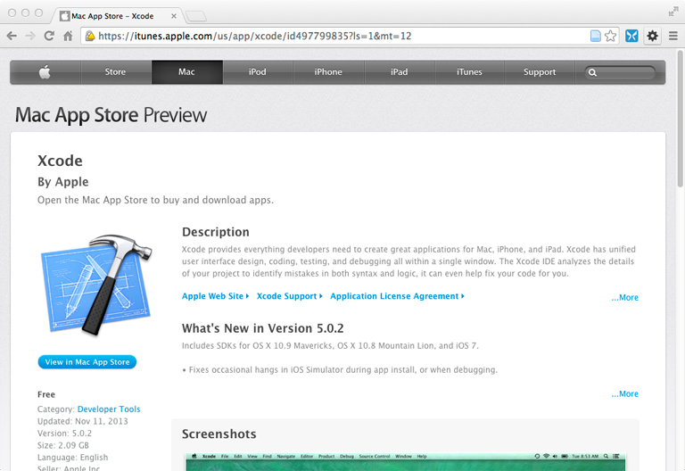
VirtualBox
Download and install a VirtualBox platform package. 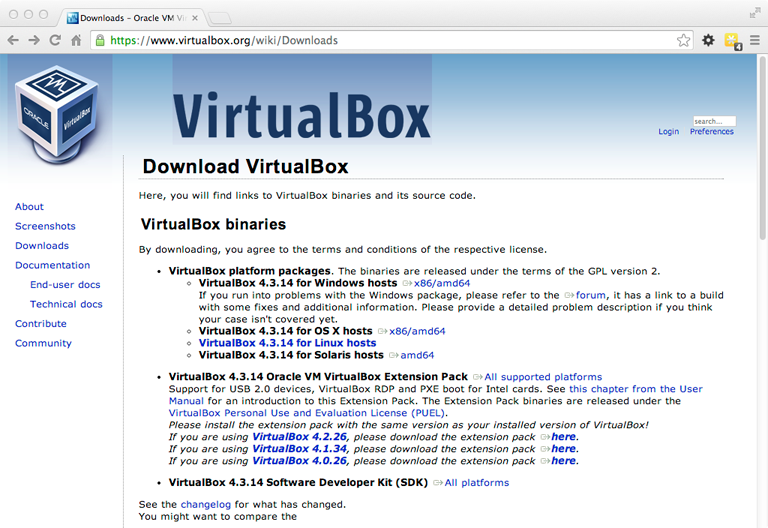
prev | ubuntu | nextVirtualBox
Download and install a VirtualBox platform package.
prev | windows | nextHomebrew
Installing this OS X package manager is a one-liner.
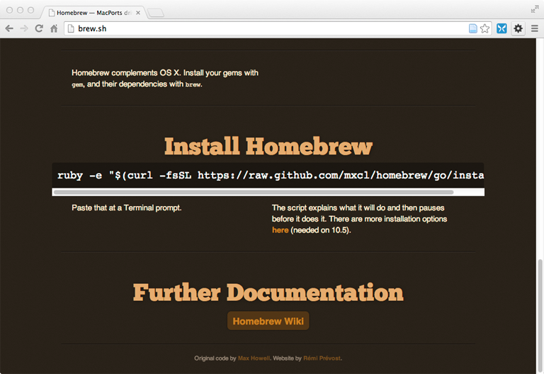A Ubuntu disk image
Download Ubuntu. 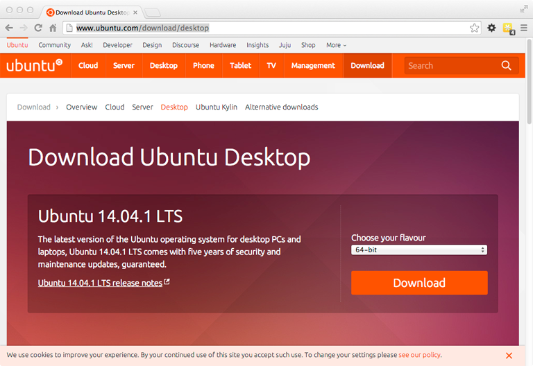
prev | ubuntu | nextA Windows disk image
Download Windows. You'll need your product key. 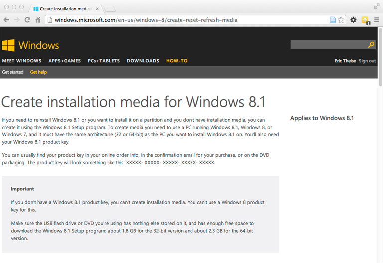
prev | windows | nextYay Homebrew!
Python
Download and install Python 2.7.X. 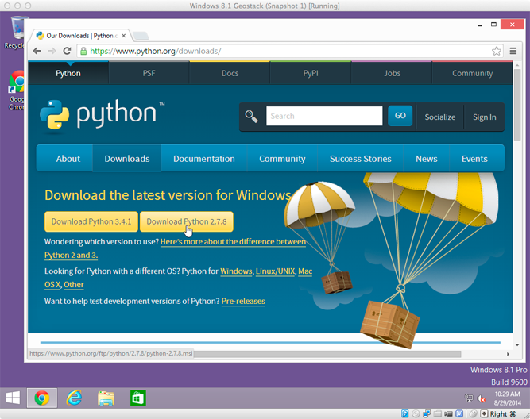
prev | windows | nextTileMill
Download and install TileMill from MapBox.
prev | ubuntu | nextNumPy
Download the installer. The filenames are very long, so make sure you get a python2.7 version.
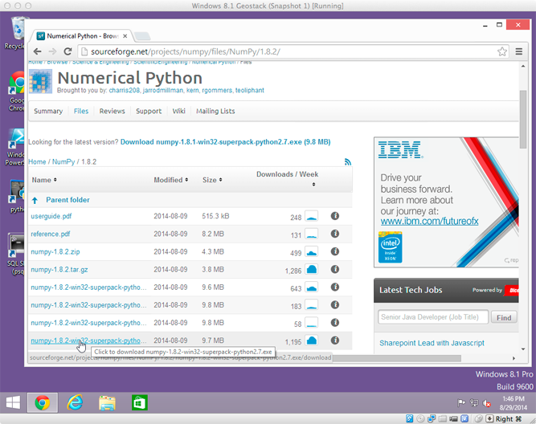
prev | windows | nextPostgreSQL
Download PostgreSQL 9.3.X. 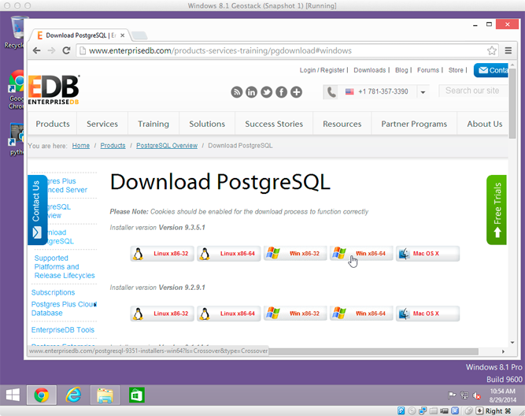
prev | windows | nextPostgreSQL & PostGIS
Run the installer. When it completes, use Stack Builder to install PostGIS 2.1
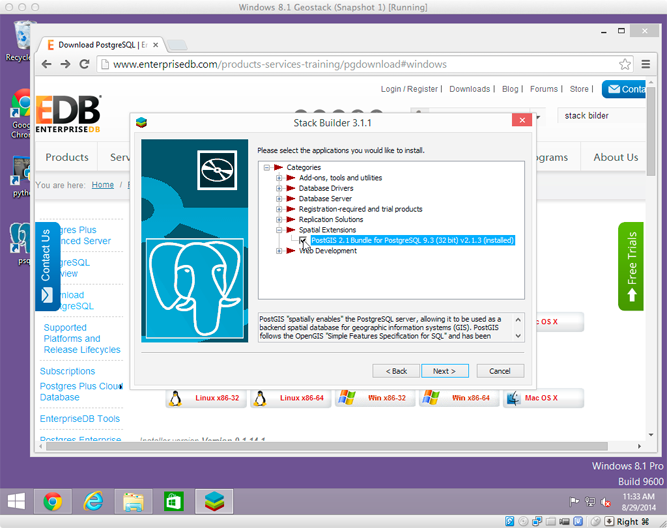
prev | windows | nextnode.js
Download and install node.js.
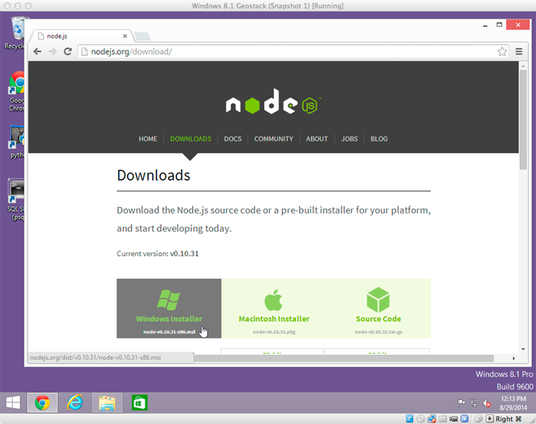
prev | windows | nextTileMill
Download and install TileMill from MapBox.
TileMill
Download and install TileMill from MapBox. 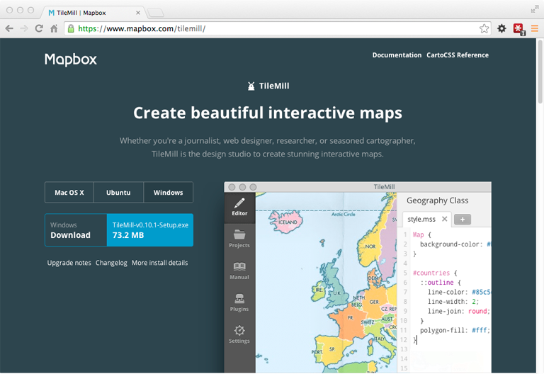
prev | windows | nextOkay, let's bake some tiles!
{kind=link}
Mapzen's metro extracts
Mapzen offers hundreds of metro extracts, and you
can easily request that
they add a new one.
Download the OSM
PBF file for Portland (Oregon).
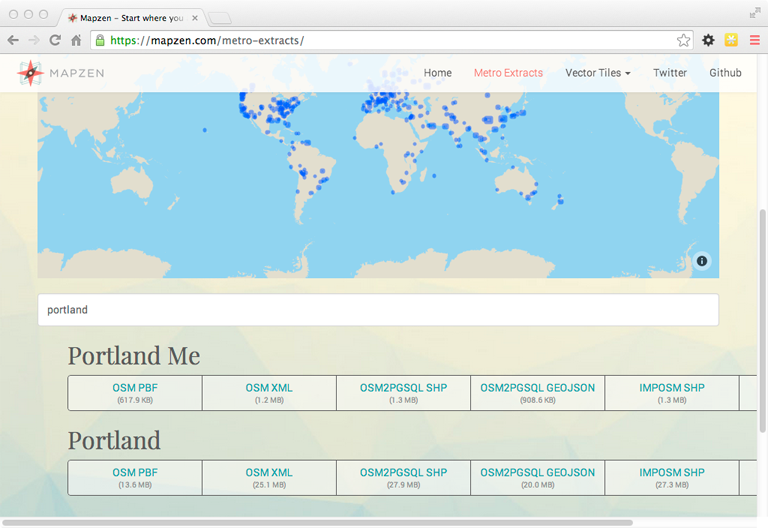
Creating a spatially-enabled database
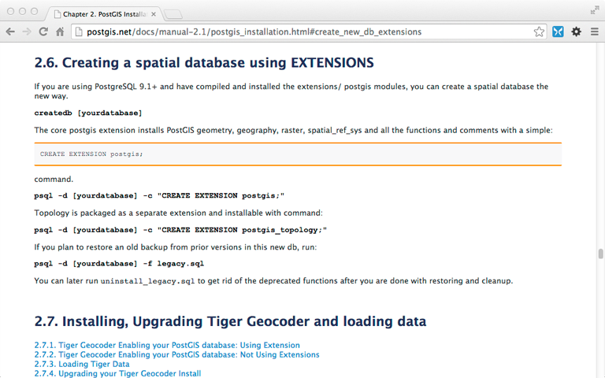
PostGIS docs tell you how to spatially-enable one database.
#ProTip: create a spatially-enabled template.
OpenStreetMap schema
Four elements are central to OpenStreetMap's data model:
- nodes: points. They may be actual points of interest or parts of ways.
- ways: linear features (roads, rivers) and area boundaries ("closed ways": forests, buildings).
- relations: multi-purpose data structures that document relationships between two or more elements.
- tags: key/value pairs, ideally following community conventions.
osm2pgsql massages these elements to
create tables suitable for rendering.
osm2pgsql schema
planet_osm_point: contains all imported nodes with tags.planet_osm_line: contains all imported waysplanet_osm_polygon: contains all imported polygons..-
planet_osm_roads: contains a subset ofplanet_osm_linesuitable for rendering at low zoom levels.
More detail is available.
Let's try and make this data visible.
TileMill
Launch TileMill and create a New Project.
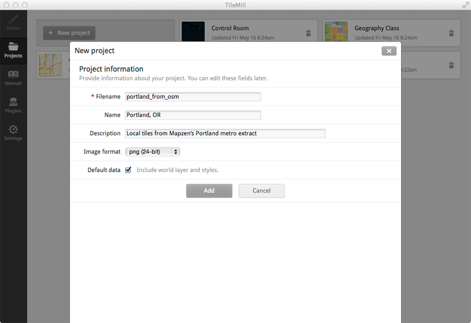TileMill
Select the project, then pan and zoom to Portland. Add a PostGIS layer for lines. (Lines: immediate gratification.)
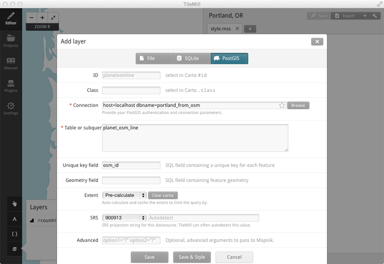Whoa. Interesting.
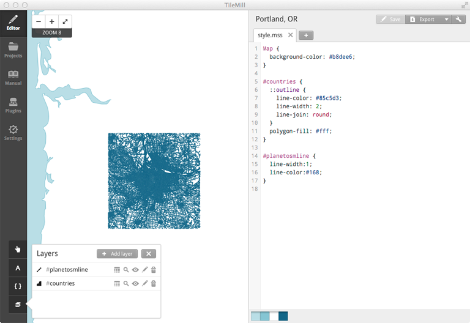Can I get a close-up of that?
Not very discriminating.

Time to look at tags. SQL and tags. And MSS.
Tuning.
Delete #planetosmline, add a PostGIS layer using:
( SELECT * FROM planet_osm_line
WHERE highway IN ('motorway', 'primary', 'secondary', 'tertiary', 'service', 'residential')
) AS roads
Tuning. MSS.
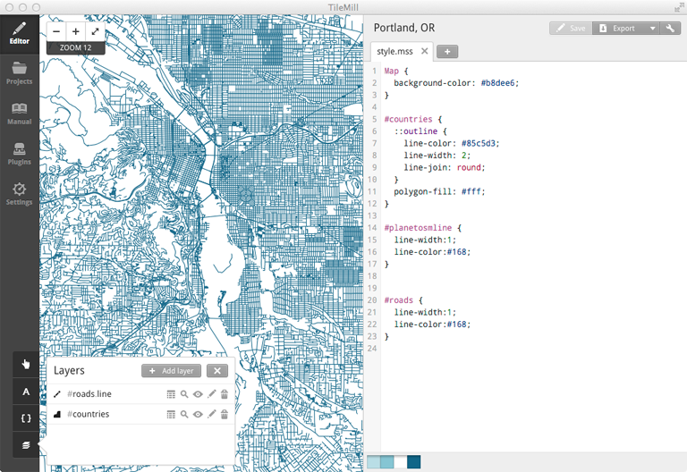You might say we're drinking from a firehose.
We need to be selective about what we suck down from our OSM database. Our basic dilemma is
- which entities to show,
- at what zoom level, and
- how to style them
Roads.mss
Delete the #planetosmline & #roads blocks from style.mss.
Click on the + to create a new Carto stylesheet, roads.mss. Into it,
copy and paste this block:
@motorway: #ff8c00;
@primary: #ffd700;
@secondary: #555555;
@tertiary: #676767;
@service: #888888;
@residential: #999999;
#roads.line {
[highway = 'motorway'] {
[zoom >= 9] { line-width:2; line-color:@motorway; }
[zoom >= 10] { line-width:3; line-color:@motorway; }
[zoom >= 11] { line-width:3.5; line-color:@motorway; }
[zoom >= 12] { line-width:4; line-color:@motorway; }
[zoom >= 13] { line-width:4.5; line-color:@motorway; }
[zoom >= 14] { line-width:5; line-color:@motorway; }
[zoom >= 15] { line-width:6; line-color:@motorway; }
[zoom >= 16] { line-width:8; line-color:@motorway; }
[zoom >= 17] { line-width:10; line-color:@motorway; }
[zoom >= 18] { line-width:12; line-color:@motorway; }
}
[highway = 'primary'] {
[zoom >= 9] { line-width:2; line-color:@primary; }
[zoom >= 10] { line-width:3; line-color:@primary; }
[zoom >= 11] { line-width:3.5; line-color:@primary; }
[zoom >= 12] { line-width:4; line-color:@primary; }
[zoom >= 13] { line-width:4.5; line-color:@primary; }
[zoom >= 14] { line-width:5; line-color:@primary; }
[zoom >= 15] { line-width:6; line-color:@primary; }
[zoom >= 16] { line-width:8; line-color:@primary; }
[zoom >= 17] { line-width:10; line-color:@primary; }
[zoom >= 18] { line-width:12; line-color:@primary; }
}
[highway = 'secondary'] {
[zoom >= 9] { line-width:0.75; line-color:@secondary; }
[zoom >= 10] { line-width:2; line-color:@secondary; }
[zoom >= 11] { line-width:2.5; line-color:@secondary; }
[zoom >= 12] { line-width:3; line-color:@secondary; }
[zoom >= 13] { line-width:3.5; line-color:@secondary; }
[zoom >= 14] { line-width:4; line-color:@secondary; }
[zoom >= 15] { line-width:5; line-color:@secondary; }
[zoom >= 16] { line-width:6; line-color:@secondary; }
[zoom >= 17] { line-width:7; line-color:@secondary; }
[zoom >= 18] { line-width:9; line-color:@secondary; }
}
[highway = 'tertiary'] {
[zoom >= 9] { line-width:0.25; line-color:@tertiary; }
[zoom >= 10] { line-width:1; line-color:@tertiary; }
[zoom >= 11] { line-width:1.5; line-color:@tertiary; }
[zoom >= 12] { line-width:2; line-color:@tertiary; }
[zoom >= 13] { line-width:2.5; line-color:@tertiary; }
[zoom >= 14] { line-width:3; line-color:@tertiary; }
[zoom >= 15] { line-width:4; line-color:@tertiary; }
[zoom >= 16] { line-width:5; line-color:@tertiary; }
[zoom >= 17] { line-width:6; line-color:@tertiary; }
[zoom >= 18] { line-width:8; line-color:@tertiary; }
}
[highway = 'service'] {
[zoom >= 10] { line-width:.5; line-color:@service; }
[zoom >= 11] { line-width:.3; line-color:@service; }
[zoom >= 12] { line-width:.4; line-color:@service; }
[zoom >= 13] { line-width:.6; line-color:@service; }
[zoom >= 14] { line-width:.8; line-color:@service; }
[zoom >= 15] { line-width:1.2; line-color:@service; }
[zoom >= 16] { line-width:2; line-color:@service; }
[zoom >= 17] { line-width:4; line-color:@service; }
[zoom >= 18] { line-width:6; line-color:@service; }
}
[highway = 'residential'] {
[zoom >= 10] { line-width:.2; line-color:@residential; }
[zoom >= 11] { line-width:.3; line-color:@residential; }
[zoom >= 12] { line-width:.4; line-color:@residential; }
[zoom >= 13] { line-width:.6; line-color:@residential; }
[zoom >= 14] { line-width:.8; line-color:@residential; }
[zoom >= 15] { line-width:1.2; line-color:@residential; }
[zoom >= 16] { line-width:2; line-color:@residential; }
[zoom >= 17] { line-width:4; line-color:@residential; }
[zoom >= 18] { line-width:6; line-color:@residential; }
}
}
MSS. Tags. Zoom.
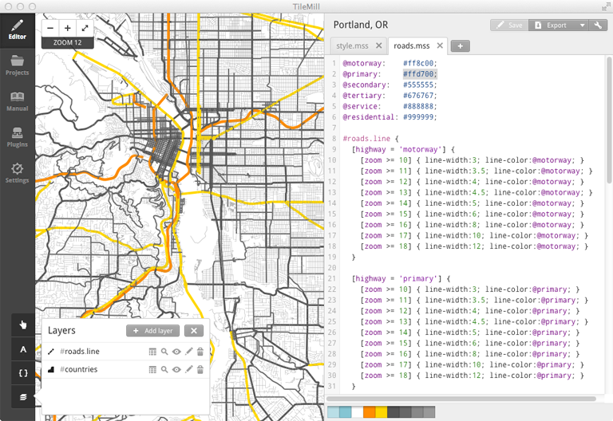Let's lay in the Willamette.
Water-area.
Add a PostGIS layer using:
( SELECT way, "natural", waterway, landuse, name
FROM planet_osm_polygon
WHERE waterway IN ('dock', 'riverbank', 'canal') OR
landuse IN ('reservoir', 'basin') OR
"natural" IN ('lake', 'water', 'land', 'glacier', 'mud')
) AS waterway
Water.mss
Click on the + to create a new Carto stylesheet, water.mss. Into it,
copy and paste this block:
@water-color: #16b;
#water-areas {
[waterway = 'dock'],
[waterway = 'canal'] {
[zoom >= 9]::waterway {
polygon-fill: @water-color;
}
}
[landuse = 'basin'][zoom >= 7]::landuse {
polygon-fill: @water-color;
}
[natural = 'lake']::natural,
[natural = 'water']::natural,
[landuse = 'reservoir']::landuse,
[waterway = 'riverbank']::waterway {
[zoom >= 6] {
polygon-fill: @water-color;
}
}
}
Forty feet deep and rising.
Do drag the #water-areas layer below #roads.line.
Let's pick up streams and creeks, too.
Water-lines.
Add a PostGIS layer using:
(SELECT way, waterway, lock, name, case WHEN tunnel IN ('yes','culvert') THEN 'yes' ELSE 'no' END AS int_tunnel, 'no' AS bridge
FROM planet_osm_line
WHERE waterway IN ('weir', 'river', 'canal', 'derelict_canal', 'stream', 'drain', 'ditch', 'wadi')
AND (bridge IS NULL OR bridge NOT IN ('yes','aqueduct'))
) AS water_lines
Water.mss
Append this block into water.mss:
.water-lines {
[waterway = 'weir'][zoom >= 15] {
line-color: #aaa;
line-width: 2;
line-join: round;
line-cap: round;
}
[waterway = 'canal'][zoom >= 12],
[waterway = 'river'][zoom >= 12] {
[bridge = 'yes'] {
[zoom >= 14] {
bridgecasing/line-color: black;
bridgecasing/line-join: round;
bridgecasing/line-width: 6;
[zoom >= 15] { bridgecasing/line-width: 7; }
[zoom >= 17] { bridgecasing/line-width: 11; }
[zoom >= 18] { bridgecasing/line-width: 13; }
}
}
line-color: @water-color;
line-width: 2;
[zoom >= 13] { line-width: 3; }
[zoom >= 14] { line-width: 5; }
[zoom >= 15] { line-width: 6; }
[zoom >= 17] { line-width: 10; }
[zoom >= 18] { line-width: 12; }
line-cap: round;
line-join: round;
[int_tunnel = 'yes'] {
line-dasharray: 4,2;
line-cap: butt;
line-join: miter;
a/line-color: #f3f7f7;
a/line-width: 1;
[zoom >= 14] { a/line-width: 2; }
[zoom >= 15] { a/line-width: 3; }
[zoom >= 17] { a/line-width: 7; }
[zoom >= 18] { a/line-width: 8; }
}
}
[waterway = 'stream'],
[waterway = 'ditch'],
[waterway = 'drain'] {
[zoom >= 13] {
[bridge = 'yes'] {
[zoom >= 14] {
bridgecasing/line-color: black;
bridgecasing/line-join: round;
bridgecasing/line-width: 3;
[waterway = 'stream'][zoom >= 15] { bridgecasing/line-width: 4; }
bridgeglow/line-color: white;
bridgeglow/line-join: round;
bridgeglow/line-width: 2;
[waterway = 'stream'][zoom >= 15] { bridgeglow/line-width: 3; }
}
}
line-width: 1;
line-color: @water-color;
[waterway = 'stream'][zoom >= 15] {
line-width: 2;
}
[int_tunnel = 'yes'][zoom >= 15] {
line-width: 2.5;
[waterway = 'stream'] { line-width: 3.5; }
line-dasharray: 4,2;
a/line-width: 1;
[waterway = 'stream'] { a/line-width: 2; }
a/line-color: #f3f7f7;
}
}
}
}
Zoom in to see some creeks.
Drag the #water-lines layer below #water-areas.
Labels
Each of the planet_osm_ tables has a name field, and we need to tap into those
to begin rendering labels.
( SELECT way, CASE WHEN SUBSTR(highway, length(highway)-3, 4) = 'link' THEN substr(highway,0,length(highway)-4) ELSE highway END, name
FROM planet_osm_line
WHERE highway IN ('motorway', 'motorway_link', 'trunk', 'trunk_link', 'primary', 'primary_link', 'secondary', 'secondary_link',
'tertiary', 'tertiary_link', 'residential', 'unclassified', 'road', 'service', 'pedestrian', 'raceway', 'living_street', 'construction', 'proposed')
AND name IS NOT NULL
) AS roads_text_name
Style.mss
Prepend this block into style.mss:
@book-fonts: "DejaVu Sans Book", "Arundina Sans Regular", "Padauk Regular", "Khmer OS Metal Chrieng Regular",
"Mukti Narrow Regular", "gargi Medium", "TSCu_Paranar Regular", "Tibetan Machine Uni Regular", "Mallige Normal",
"Droid Sans Fallback Regular", "Unifont Medium", "unifont Medium";
Road.mss
Append this block into road.mss:
#roads-text-name {
[highway = 'motorway'],
[highway = 'trunk'],
[highway = 'primary'] {
[zoom >= 13] {
text-name: "[name]";
text-size: 8;
text-fill: black;
text-spacing: 300;
text-clip: false;
text-placement: line;
text-face-name: @book-fonts;
text-halo-radius: 0;
}
[zoom >= 14] {
text-size: 9;
}
[zoom >= 15] {
text-size: 10;
}
[zoom >= 17] {
text-size: 11;
}
}
[highway = 'secondary'] {
[zoom >= 13] {
text-name: "[name]";
text-size: 8;
text-fill: black;
text-spacing: 300;
text-clip: false;
text-placement: line;
text-face-name: @book-fonts;
text-halo-radius: 1;
}
[zoom >= 14] {
text-size: 9;
}
[zoom >= 15] {
text-size: 10;
}
[zoom >= 17] {
text-size: 11;
}
}
[highway = 'tertiary'],
[highway = 'tertiary_link'] {
[zoom >= 14] {
text-name: "[name]";
text-size: 9;
text-fill: black;
text-spacing: 300;
text-clip: false;
text-placement: line;
text-face-name: @book-fonts;
text-halo-radius: 1;
}
[zoom >= 17] {
text-size: 11;
}
}
[highway = 'proposed'],
[highway = 'construction'] {
[zoom >= 13] {
text-name: "[name]";
text-size: 9;
text-fill: black;
text-spacing: 300;
text-clip: false;
text-placement: line;
text-halo-radius: 1;
text-face-name: @book-fonts;
}
[zoom >= 17] {
text-size: 11;
}
}
[highway = 'residential'],
[highway = 'unclassified'],
[highway = 'road'] {
[zoom >= 15] {
text-name: "[name]";
text-size: 8;
text-fill: black;
text-spacing: 300;
text-clip: false;
text-placement: line;
text-halo-radius: 1;
text-face-name: @book-fonts;
}
[zoom >= 16] {
text-size: 9;
}
[zoom >= 17] {
text-size: 11;
text-spacing: 400;
}
}
[highway = 'raceway'],
[highway = 'service'] {
[zoom >= 16] {
text-name: "[name]";
text-size: 9;
text-fill: black;
text-spacing: 300;
text-clip: false;
text-placement: line;
text-halo-radius: 1;
text-face-name: @book-fonts;
}
[zoom >= 17] {
text-size: 11;
}
}
[highway = 'living_street'],
[highway = 'pedestrian'] {
[zoom >= 15] {
text-name: "[name]";
text-size: 8;
text-fill: black;
text-spacing: 300;
text-clip: false;
text-placement: line;
text-halo-radius: 1;
text-face-name: @book-fonts;
}
[zoom >= 16] {
text-size: 9;
}
[zoom >= 17] {
text-size: 11;
}
}
}
static.html
Let's look at the contents of static.html.
<!DOCTYPE html>
<html>
<head>
Static Data with Leaflet
</head>
<body>
<script>
var
tileUrl,
map = L.map('map').setView([45.521969, -122.683424], 13);
// @todo: Pick a tileserver by uncommenting one of these values for tileUrl:
//
// To use the MapBox example tiles:
// tileUrl = 'https://{s}.tiles.mapbox.com/v3/{id}/{z}/{x}/{y}.png';
//
// To use the Python SimpleHTTPServer you've set up on port 8887:
// tileUrl = 'http://localhost:8887/tiles/{z}/{x}/{y}.png';
//
// To use the TileStream server you've set up on port 8888:
tileUrl = 'http://localhost:8888/v2/portland_from_osm/{z}/{x}/{y}.png';
//
L.tileLayer(tileUrl, {
minZoom: 10,
maxZoom: 16,
attribution: 'Map data © OpenStreetMap contributors, ' +
'Imagery © Mapbox',
id: 'examples.map-i86knfo3'
}).addTo(map);
L.marker([45.521969, -122.683424]).addTo(map)
.bindPopup(
'Ración
' +
'1205 SW Washington St
Portland, OR'
);
var popup = L.popup();
</script>
</body>
</html>
Open it in your browser.
dynamic.html
Let's look at the contents of dynamic.html.
<!DOCTYPE html>
<html>
<head>
Dynamic Data with Leaflet
</head>
<body>
<script>
function initMap() {
var tileUrl;
// Note: the [Wikipedia page on Downtown Portland Oregon](http://en.wikipedia.org/wiki/Downtown_Portland)
// gives its location as 45.51935°N 122.67962°W. We'll center the map at that location with zoom level 12.
//
var map = L.map('map').setView([45.51935, -122.67962], 12);
// @todo: Pick a tileserver by uncommenting one of these values for tileUrl:
//
// To use the MapBox example tiles:
// tileUrl = 'https://{s}.tiles.mapbox.com/v3/{id}/{z}/{x}/{y}.png';
//
// To use the Python SimpleHTTPServer you've set up on port 8887:
// tileUrl = 'http://localhost:8887/tiles/{z}/{x}/{y}.png';
//
// To use the TileStream server you've set up on port 8888:
tileUrl = 'http://localhost:8888/v2/portland_from_osm/{z}/{x}/{y}.png';
//
L.tileLayer(tileUrl, {
minZoom: 10,
maxZoom: 16,
attribution: 'Map data © OpenStreetMap contributors, ' +
'Imagery © Mapbox',
id: 'examples.map-i86knfo3'
}).addTo(map);
$.ajax({
url: 'http://localhost:3000/amenities',
dataType: 'json',
type: 'get'
}).done(function (data) {
var geojson = L.geoJson(data, {
pointToLayer: function (feature, latlng) {
var
fillColor,
fillOpacity = 0.75;
// Note: as this is a quick & dirty demo, fill colors have been assigned arbitrarily
// to the top 12 cuisines found tagged to restaurants in Sep 2014 OpenStreetMap
// data for Portland, OR. Any other cuisine, or restaurants that have not been tagged
// with a cuisine, get a dark gray fill color having low opacity. The color values
// come from the 12 data class/qualitative nature/Set3 at http://colorbrewer2.org/
//
// SELECT tags->'cuisine' AS cuisine, count(tags->'cuisine')
// FROM planet_osm_point
// WHERE amenity = 'restaurant'
// GROUP BY tags->'cuisine'
// ORDER BY count desc
// LIMIT 12;
//
// cuisine | count
//----------+-------
// pizza | 47
// mexican | 42
// american | 32
// chinese | 23
// thai | 20
// japanese | 18
// italian | 17
// burger | 17
// sushi | 16
// asian | 11
// regional | 9
// sandwich | 8
// (12 rows)
//
switch (feature.properties.cuisine) {
case 'pizza':
fillColor = '#8dd3c7';
break;
case 'mexican':
fillColor = '#ffffb3';
break;
case 'american':
fillColor = '#bebada';
break;
case 'chinese':
fillColor = '#fb8072';
break;
case 'thai':
fillColor = '#80b1d3';
break;
case 'japanese':
fillColor = '#fdb462';
break;
case 'italian':
fillColor = '#b3de69';
break;
case 'burger':
fillColor = '#fccde5';
break;
case 'sushi':
fillColor = '#d9d9d9';
break;
case 'asian':
fillColor = '#bc80bd';
break;
case 'regional':
fillColor = '#ccebc5';
break;
case 'sandwich':
fillColor = '#ffed6f';
break;
default:
fillColor = '#222';
fillOpacity = 0.1;
break;
}
var marker = L.circleMarker(latlng, {
radius: 6,
weight: 1,
color: "#000",
opacity: 1,
fillColor: fillColor,
fillOpacity: fillOpacity
});
map.on('load zoomend', function () {
var currentZoom = map.getZoom();
if (currentZoom < 13) {
marker.setRadius(6);
} else {
if (currentZoom < 15) {
marker.setRadius(9);
} else {
marker.setRadius(12);
}
}
});
return marker;
},
onEachFeature: function (feature, layer) {
layer.bindPopup(
'' +
''+feature.properties.name+'' +
''
);
}
}).addTo(map);
});
}
initMap();
</script>
</body>
</html>
Note the use of L.geoJson(), the
switch statement to determine how to color each circleMarker, and the use of
map.getZoom() to set the radius of each circleMarker.